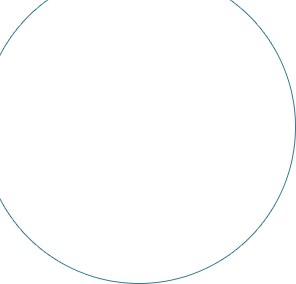
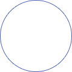
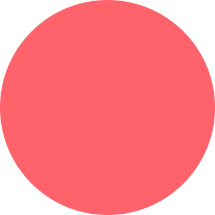
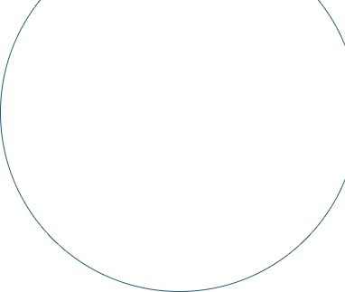
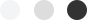
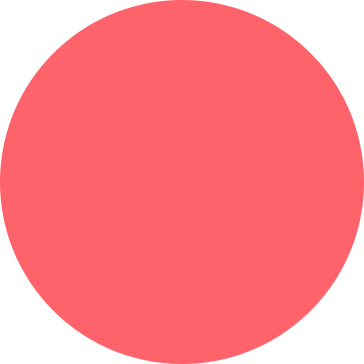
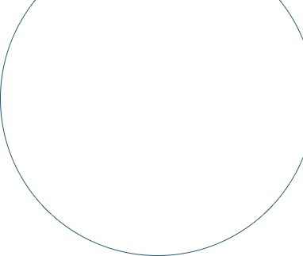
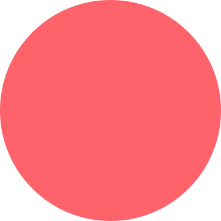
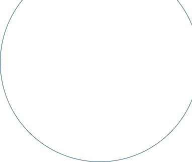

BACK
 
 
PORTFOLIO
WEB
사이트명.
한산소곡주
작업기간.
2019.10.23 ~ 2019.11.26
컨셉.
전통주가 갖고있던 '저렴한 술','옛날 술' 이미지를 벗어나고자 화이트/블랙컬러를 이용하여 깔끔하고
깨끗한 믿음가는 컨셉으로 만들었습니다. 기존 사이트에서 확인하기 어려웠던 제품종류를 메인으로 배치하여
제품에 쉽게 접근 할 수 있도록 했습니다.
컬러.

웹사이트 바로가기


 


